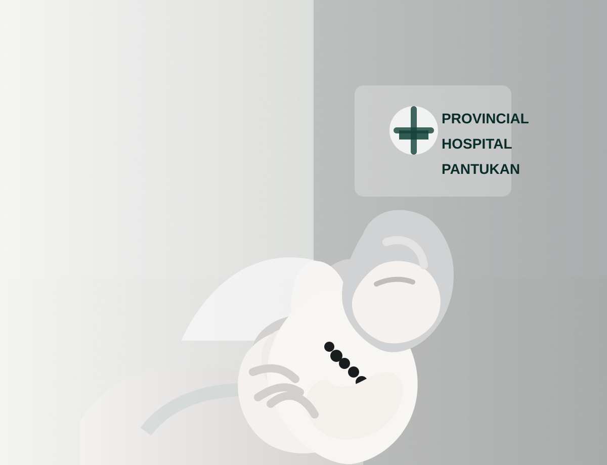

Editorial
A 96% HOSPITAL RATING,
A BABY’S DEATH,
AND THE QUESTIONS
THAT DEMAND ANSWERS
A hospital’s performance rating is an important measure of institutional achievement. But when allegations of delayed medical attention emerge following the death of an infant, the public deserves more than reassuring statements—it deserves transparency, accountability, and answers grounded in evidence.
Truth
Fairness
Transparency
Accountability
Latest stories

Editorial
A 96% Hospital Rating, a Baby’s Death, and the Questions That Demand Answers
What a stellar score leaves out when a life is lost under medical care.
Investigative
Justice Demands Answers: Dodong Bucol Jr.
Public accountability, unanswered evidence, and the cost of silence.
Analysis
The Bucol Killing: Unanswered Questions Behind the Conflict
Timeline gaps, missing weapons, and the questions still without clear answers.